v1 · Começo Barato Canil 1 + Solário de 1 m de terra, para começar já
A v1 coloca 5 frangas de 35 dias com o mínimo de obra e gasto. A v2 (CONTEXTO-COMPLETO-PROJETO.md, solário 3 × 4 m, 8–10 aves) é construída depois em volta da v1, sem as aves precisarem sair, reaproveitando quase tudo.
Medidas exatas (z a partir da parede do fundo do canil)
| Peça | Onde |
|---|---|
| Canil 1 | x 0–1,30, z 0–1,00, piso a ~12–13 cm da terra |
| Patamar (cimento) | z 1,00–2,00, ~10 cm acima da terra |
| Terra do solário | z 2,00–3,00 |
| Lateral direita do solário | linha x = 1,40, de z = 1,00 (parede dos canis) até z = 3,00 |
| Frente do solário | linha z = 3,00, de x = 0 (muro esquerdo) até x = 1,40 |
| Altura do solário | 1,55 m acima da terra |
| 2 estacas finas (Ø 5–7 cm × 2,20 m, 50 cm enterradas) | (x 1,40; z 2,05) e (x 1,40; z 3,00) |
| Porta 0,80 × 1,50 m | na frente, presa na estaca (1,40; 3,00), abre para fora |
z = 4,00), a frente da v1 já ficaria na linha da frente da v2, custando ~1,5 m a mais de tela.
Ferramentas & EPIs O que precisa para montar a v1 (sem alvenaria e sem mexer em telha)


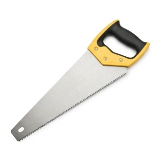


Outros itens de uso na obra e manejo: broxa ou pincel (para caiar), vassoura, pau para socar terra, peneira (para o tabuleiro), mangueira (para lavar o balde-ninho) e papel branco ou lenço (para conferir pixilinga à noite).
Lista de Compras v1 Materiais da v1 (reaproveitados na v2 vs exclusivos)
| ✓ | Foto | Etapa / Uso | Material | Especificação | Quantidade |
|---|---|---|---|---|---|
| ITENS QUE TAMBÉM SÃO DA v2 (comprar inteiros e guardar a sobra) | |||||
 | Etapas 0 e 1 | Tela soldada 1/2" | Grade do Canil 1 e vãos da telha (v1 usa ~3 m; pedaços voltam para a v2) | 10 m (rolo da v2) | |
 | Etapa 3 | Tela hexagonal 1" × 1,50 m | Lateral, frente, faixa acima do muro, teto e saia (v1 usa ~7 m; teto e lateral voltam para a v2) | 15 m (rolo da v2) | |
 | Etapa 3 | Arame liso nº 14 | 2 fios do teto do solário (sobra volta para a v2) | 20 m | |
 | Etapas 0 e 3 | Arame recozido nº 18 + Grampos 3/4" | Amarrar tela nos vãos/arames e grampear tela na madeira e na saia | 1 rolo arame + grampos 3/4" | |
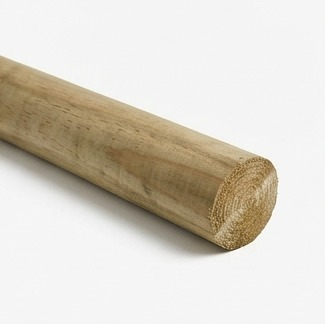 | Etapa 2 | Estacas finas de eucalipto tratado (Ø 5–7 × 2,20 m) | Socadas 50 cm sem concreto em (1,40; 2,05) e (1,40; 3,00); arrancadas e reutilizadas na v2 | 2 unidades | |
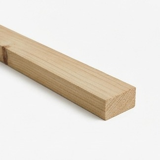 | Etapas 2 e 3 | Sarrafos 5 × 2,5 × 3,00 m | Abaixo do beiral, muro esquerdo, patamar, topo e porta (a v2 usa 7) | 3 peças na v1 | |
 | Etapa 3 | Kit da porta | Dobradiças e ferrolho da porta 0,80 × 1,50 m | 1 kit | |
 | Etapas 1, 2 e 3 | Pregos + Buchas 8 mm com parafusos | Pregos p/ sarrafos/porta; buchas 8 mm p/ suportes do poleiro, sarrafo no muro, abaixo do beiral e no patamar | Pregos + buchas 8 mm c/ parafusos | |
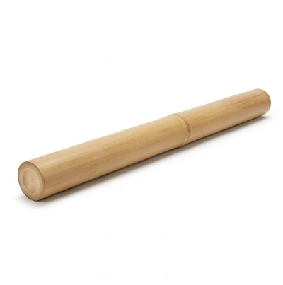 | Etapa 1 | Poleiro de 1,30 m (4–5 cm) | Madeira não tratada, solto sobre 2 suportes (sem parafuso no poleiro) | 1 peça de 1,30 m | |
 | Etapa 1 | Maravalha grossa | Cama de 8–10 cm no piso do Canil 1 (fora da área do tabuleiro) | Camada de 8–10 cm | |
 | Etapa 1 | Galão de 20 L + cano de 100 mm | Comedouro pendurado no canto da frente à direita do Canil 1 | 1 galão 20 L + cano 100 mm | |
| ITENS SÓ DA v1 (e baratos) | |||||
| Etapa 4 | Balde de 10 L com tampa e 2–3 bicos nipple | Pendurado no sarrafo da lateral direita, sobre o patamar (reaproveitado na v2) | 1 balde 10 L + 2–3 bicos | |
| Etapa 1 (~16 sem.) | Balde de 20 L para o ninho | Deitado, plástico sem emenda, com borda na boca; entra só com ~16 semanas (vai para a v2) | 1 balde 20 L | |
 | Etapa 1 | Tábuas para o tabuleiro | Caixa rasa de 1,30 × 0,55 m com borda de 5 cm embaixo do poleiro | Para 1,30 × 0,55 m | |
 | Etapas 1 e 4 | Areia | ~3 cm no tabuleiro de dejetos e no banho de terra (com cinza de lenha) | Tabuleiro + banho de terra | |
 | Etapa 0 | Cal hidratada para caiar | Caiar paredes internas do Canil 1 e viga velha (tira limo e fecha esconderijos de ácaro) | Para Canil 1 + viga | |
Itens extras de manejo e aves da v1: 5 frangas de poedeira comercial (35 dias, vacinadas), ração de crescimento (até ~16 semanas) e de postura (depois), 1 ovo falso (para o ninho com ~16 semanas), folhas secas do quintal e cinza de lenha, pedras para segurar a saia de 30 cm, bebedouro comum nos primeiros dias para treinar o bico, e pote de calcário ou farinha de ostra quando começarem a botar.
Oficina do Iniciante Técnicas da v1: caiar, socar estaca sem concreto, cortar madeira e pôr bucha
Na v1 não há mistura de massa nem alvenaria de tijolo. As 4 técnicas abaixo resolvem toda a montagem:
1. Como caiar o Canil 1 e a viga velha (técnica da v1)
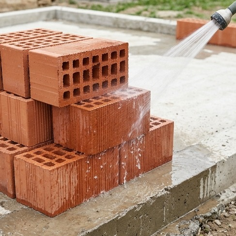
2. Como socar estaca sem concreto (técnica da v1)

(1,40; 2,05) e (1,40; 3,00) (use M4 para a linha lateral).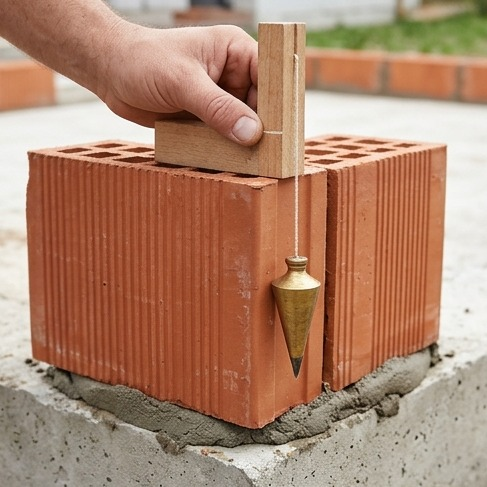
3. Cortar madeira, furar com bucha 8 mm e prender tela

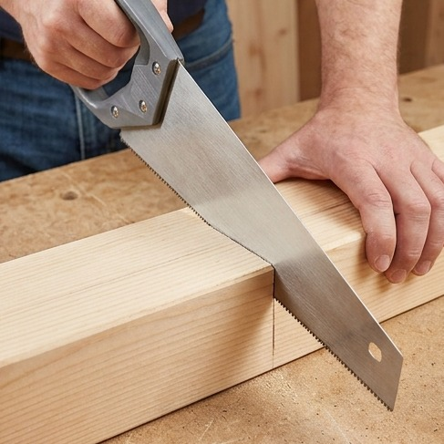
8 mm na alvenaria (muro esquerdo, frente abaixo do beiral, laterais do canil e patamar), tire o pó, encaixe a bucha rente e aperte o parafuso com chave.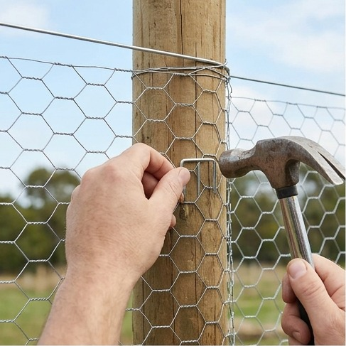
3/4" nos sarrafos/estacas e alicate com arame recozido nº 18 nos arames e emendas. Nunca amarrar na borda da telha.Etapa 0 · Medidas, Limpeza e Preparo Conferir M1–M4, tirar a tralha, caiar e fechar vãos da telha
📏 Medidas para tirar antes de comprar
Tire essas 4 medidas com a trena antes de comprar ou cortar telas e sarrafos. Elas definem o tamanho real das tiras de tela, da faixa acima do muro, da altura do sarrafo do beiral e da linha das estacas.


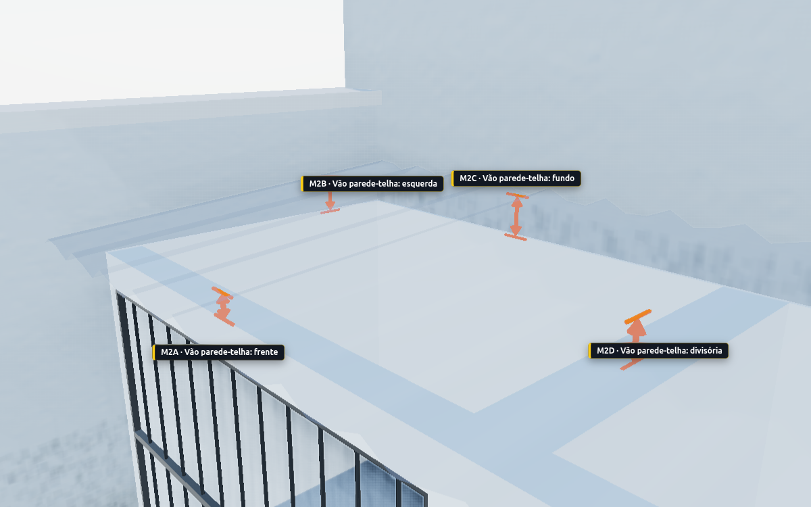
O que fazer com cada número:
- M1 — Altura do beiral (M1A e M1B): meça do piso do patamar (cimento) até a borda de baixo da telha velha na frente do Canil 1 (junto ao muro esquerdo e junto à parede divisória). Use o menor valor (descontando os
5 cmdo sarrafo) para fixar o sarrafo horizontal abaixo do beiral — dali sai o teto de tela até1,55 mna frente. Se M1 for menor que1,30 m, o teto de tela fica quase plano; tudo bem, porque a chuva passa pela tela. Se houver diferença entre M1A e M1B, feche a fresta acima do sarrafo com tira de tela1/2"amarrada no sarrafo. - M2 — Vão entre topo das paredes do Canil 1 e a telha: anote o maior vão em cada parede: M2A frente, M2B esquerda, M2C fundo, M2D divisória (frente acima da grade, lateral esquerda, fundo e parede divisória). Se algum ponto passar de
1 cm, precisa de tira de tela1/2"cortada na medida do vão daquela parede (rato passa por~2 cme timbu pela cabeça). Se for até1 cm, não precisa de tira ali. - M3 — Altura do muro esquerdo (M3A e M3B): meça da terra (lado de dentro do quintal) até o topo do muro na beira do patamar (
1 mà frente da grade) e na frente do solário (2 mà frente da grade). Pelas fotos parece ter~1,25 m, mas ninguém mediu. A faixa de tela fecha de M3 até1,55 m: faça1,55 m − menor M3(ex.: se der1,25 m, corte faixa de~30 cm; se der≥ 1,55 m, não precisa de faixa, só de sarrafo para amarrar o teto). - M4 — Largura até a lateral direita: meça na frente dos canis do muro esquerdo até o meio da parede que divide os canis (o projeto supõe
1,40 m). É exatamente em M4 que ficam o sarrafo do patamar, a linha da lateral direita e as 2 estacas finas — e a frente fixa de tela teráM4 − 0,80 mda porta.
Tabela para anotar (imprima ou copie no celular):
- Tirar as medidas M1 a M4 antes de comprar: com a trena e papel/caneta (ou celular), preencha toda a tabela acima antes de sair para comprar ou cortar telas e sarrafos.
- Tirar a tralha: com luvas, vassoura e pá/enxada, limpe o Canil 1 e retire toda a tralha e as tábuas velhas soltas de perto dos canis (tira esconderijo de ácaro vermelho e outros bichos).
- Caiar o Canil 1 e a viga velha: vestindo luvas e máscara PFF2, misture cal hidratada com água no balde e aplique com broxa ou pincel nas paredes internas do Canil 1 e na viga velha antes de as aves entrarem. Além de fechar microfrestas contra o ácaro, isso também tira o limo verde. Deixe secar bem.
- Fechar os vãos da telha com tela soldada
1/2": onde passar de1 cmentre o topo das paredes do Canil 1 e a telha velha (frente acima da grade, lateral esquerda, fundo e parede divisória), meça com a trena e corte com o alicate (de luvas) tiras de tela soldada1/2"(um timbu passa por onde passa a cabeça dele, e um rato por~2 cm). Amarre com alicate usando arame recozido nº 18 ou grampeie em sarrafo com martelo e grampos3/4". Nunca amarrar na borda da telha.📏 Use M2 para o tamanho das tiras de tela em cada parede (e M1 se sobrar vão no beiral).
Etapa 1 · Canil 1 Grade 1/2", poleiro solto, tabuleiro, maravalha, comedouro e ninho
- Grade do Canil 1 com tela soldada
1/2": meça com a trena, corte com o alicate (de luvas) a tela soldada1/2"(a mesma da v2) e amarre em toda a grade com arame recozido nº 18 torcido no alicate. Importante: o solário usa tela hexagonal1", e timbu rasga tela fina; de noite, a grade fechada no ferrolho é o que protege as aves. De dia, a grade fica amarrada aberta. - Suportes e 1 poleiro solto: marque com a trena a
30 cmda parede do fundo (e~30 cmde altura do piso), fure as paredes laterais com furadeira e broca vídea8 mm, encaixe buchas8 mme parafuse com a chave 2 suportes (pedaços de sarrafo/madeira). Corte com o serrote 1 poleiro de1,30 m(4–5 cm, madeira não tratada) e apoie solto sobre os 2 suportes, sem parafuso no próprio poleiro — assim ele sai inteiro para escaldar e tomar sol. Altura:~30 cmdo piso no começo, subindo os suportes para45 cmcom~2 mesesde idade. - Tabuleiro de dejetos: meça com trena e esquadro, corte as tábuas com o serrote, faça pré-furo com furadeira e broca fina de madeira e monte com pregos e martelo uma caixa rasa de
1,30 × 0,55 m, com borda de5 cm. Coloque embaixo do poleiro e encha com~3 cmde areia usando a pá/enxada. Peneirar 2× por semana (com peneira). É o que mais segura o cheiro. - Cama de maravalha grossa: com pá/enxada (ou de luvas), espalhe
8–10 cmde maravalha grossa no resto do piso do Canil 1. - Comedouro protegido: corte/monte com serrote/faca o comedouro usando o galão de 20 L e o cano de 100 mm, e pendure com arame recozido nº 18 (torcido no alicate) no canto da frente à direita do Canil 1, na altura do dorso delas. Rato e pardal não chegam nele.
- Ninho de balde (entra só com ~16 semanas): deixe separado por enquanto e instale só quando estiverem com ~16 semanas. Apoie/prenda com arame recozido nº 18 e alicate 1 balde de 20 L deitado (plástico sem emenda, com borda na boca — lava com mangueira), no canto da frente à esquerda, a
15 cmdo piso, com 1 ovo falso dentro.

Etapa 2 · Estrutura do Solário 2 estacas finas socadas e sarrafos da estrutura
- Socar as 2 estacas finas sem concreto: marque com a trena os 2 pontos na terra —
(x 1,40; z 2,05)(logo após o patamar) e(x 1,40; z 3,00)(canto da frente à direita) — e abra 2 buracos de50 cmcom cavadeira (ou enxada). Posicione as 2 estacas finas de eucalipto tratado (Ø 5–7 cm × 2,20 m) deixando1,55 macima da terra, alinhadas com o prumo caseiro (barbante + pedra), e devolva terra e pedras aos poucos com enxada/pá, socando cada camada com um pau. Na v2, elas serão arrancadas e socadas nos 2 pontos de estaca fina da v2.📏 Use M4 para marcar a linha exata da lateral direita e das 2 estacas. - Sarrafo na alvenaria abaixo do beiral (
z = 1,00): meça com a trena, corte com o serrote o sarrafo5 × 2,5 cm, fure a alvenaria da frente dos canis com furadeira e broca vídea8 mme parafuse com a chave usando buchas8 mme parafusos logo abaixo do beiral. É nele que o teto de tela do solário e as frestas que sobram serão amarrados (nunca na telha).📏 Use M1 para definir a altura do sarrafo do beiral. - Sarrafo no muro esquerdo (
x = 0): corte com o serrote o sarrafo5 × 2,5 cm, fure o topo do muro esquerdo com furadeira e broca vídea8 mme parafuse com a chave usando buchas8 mme parafusos; no canto da frente (x = 0; z = 3,00), suba um trecho vertical de sarrafo até1,55 m(com pré-furo de broca fina e pregos/martelo ou bucha no muro) para receber o sarrafo de topo da frente e fechar a faixa acima do muro.📏 Use M3 para calcular a altura da faixa até1,55 macima do muro. - Sarrafo no patamar com bucha (
x = 1,40,z = 1,00..2,00): meça com a trena, corte o sarrafo5 × 2,5 cmcom o serrote, fure o piso do patamar com furadeira e broca vídea8 mm(sem quebrar o cimento!) e prenda com buchas8 mme parafusos usando a chave, ligando a parede divisória dos canis à estaca(1,40; 2,05).📏 Use M4 para alinhar o sarrafo do patamar com as estacas. - Sarrafos de topo e vão da porta: meça com trena e esquadro, corte os sarrafos
5 × 2,5 cmcom o serrote, faça pré-furo (furadeira + broca fina de madeira) e pregue com pregos e martelo ligando o topo a1,55 mna lateral direita (x = 1,40, das paredes dos canis até as 2 estacas) e na frente (z = 3,00, da estaca(1,40; 3,00)até o montante emx = 0), deixando o vão de0,80 mpara a porta junto à estaca(1,40; 3,00).
Etapa 3 · Fechamento Porta 0,80 × 1,50 m, tela hexagonal 1", teto sobre 2 arames e saia de 30 cm
- Medir e cortar a tela hexagonal
1" × 1,50 m(~7 m do rolo de 15 m): usando a trena, o alicate e luvas, corte apenas os pedaços necessários do rolo de15 mda v2 (teto e lateral voltam para a v2 depois).📏 Use M1, M3 e M4 antes de cortar a tela do rolo. - Montar e instalar a porta
0,80 × 1,50 m: meça com trena e esquadro, corte os sarrafos com o serrote, faça pré-furo com broca fina de madeira e monte o quadro da porta (0,80 × 1,50 m) com pregos e martelo. Feche a folha com tela hexagonal1"usando martelo e grampos3/4"e instale na frente, presa na estaca(1,40; 3,00), abrindo para fora, com o kit da porta (dobradiças e ferrolho) usando a chave. Ela muda inteira de lugar na v2. - Fechar lateral direita e trecho fixo da frente: de luvas, estique a tela hexagonal
1"e prenda nos sarrafos e estacas com martelo e grampos3/4"(e arame recozido nº 18 com alicate nas emendas) na lateral direita (x = 1,40, dez = 1,00atéz = 3,00) e no trecho fixo da frente (z = 3,00, ao lado da porta atéx = 0). Na frente do Canil 2 (que fica fora do solário), a grade continua fechada e com a tela1/2". - Fechar a faixa acima do muro esquerdo: meça com a trena, corte a faixa de tela hexagonal
1"com o alicate (de luvas) e prenda com martelo e grampos3/4"nos sarrafos do muro e do topo (e arame recozido nº 18 nas emendas), fechando do topo do muro até1,55 m.📏 Use M3 para cortar a faixa acima do muro esquerdo (1,55 m − M3). - Teto do solário sobre 2 arames: com o alicate e luvas, estique 2 fios de arame liso nº 14 da parede dos canis até a frente do solário (
z = 3,00) e estenda a tela hexagonal1"por cima, amarrando com arame recozido nº 18 (torcido no alicate) nos fios, nos sarrafos laterais/frente e no sarrafo abaixo do beiral (nunca na borda da telha). Timbu sobe em muro e em tela, então o teto não pode ficar aberto.📏 Use M1 para amarrar o teto no sarrafo do beiral e fechar eventuais frestas. - Saia de 30 cm no chão (sem mureta): na parte externa da lateral na terra e do trecho fixo da frente (deixando o giro da porta livre), dobre/deite no chão por fora uma saia de tela de 30 cm cortada com o alicate (de luvas), prendendo na base de madeira/tela com martelo e grampos
3/4"ou arame nº 18 e segurando no chão com pedras contra quem cava. Não precisa cavar valeta.

Etapa 4 · Operação Bebedouro de bicos, banho de terra, 5 frangas e treino do bico
- Bebedouro de bicos (sobre o patamar): use o balde de 10 L com tampa e 2–3 bicos nipple no fundo. Pendure com arame recozido nº 18 (torcido com o alicate) no sarrafo da lateral direita, sobre o patamar (para os pingos caírem no cimento e não virarem lama), medindo com a trena para o fundo ficar na altura da cabeça delas esticada, e encha com água.
- Patamar e terra do solário: deixe o patamar em cimento liso, sem cama (raspar 2× por semana com pá/enxada). Na parte de terra (
z 2,00–3,00), espalhe com enxada/pá folhas secas do quintal (revirar 1× por semana) e faça num canto o banho de terra misturando areia e cinza de lenha com a enxada. - Chegada das 5 frangas de 35 dias: escolha 5 frangas de poedeira comercial (Lohmann, Isa Brown ou Embrapa 051), vacinadas. Com 35 dias, em João Pessoa, não precisam de lâmpada. Antes de entrarem no bando, olhe embaixo das asas e em volta da cloaca (e se no futuro entrar ave nova, mantenha 2–3 semanas separada).
- Treino do bico: nos primeiros dias, deixe um bebedouro comum com água junto e mostre o bico nipple tocando nele até todas aprenderem a beber no nipple.
- Alimentação e postura: abasteça o comedouro com ração de crescimento até ~16 semanas e mude para ração de postura depois disso (quando também entra o balde-ninho com 1 ovo falso). Quando começarem a botar, ponha um pote de calcário ou farinha de ostra.
- Grade do Canil 1 dia e noite: de dia, a grade fica amarrada aberta (com arame/corda); ao escurecer, elas entram sozinhas no Canil 1 e você só fecha a grade no ferrolho.
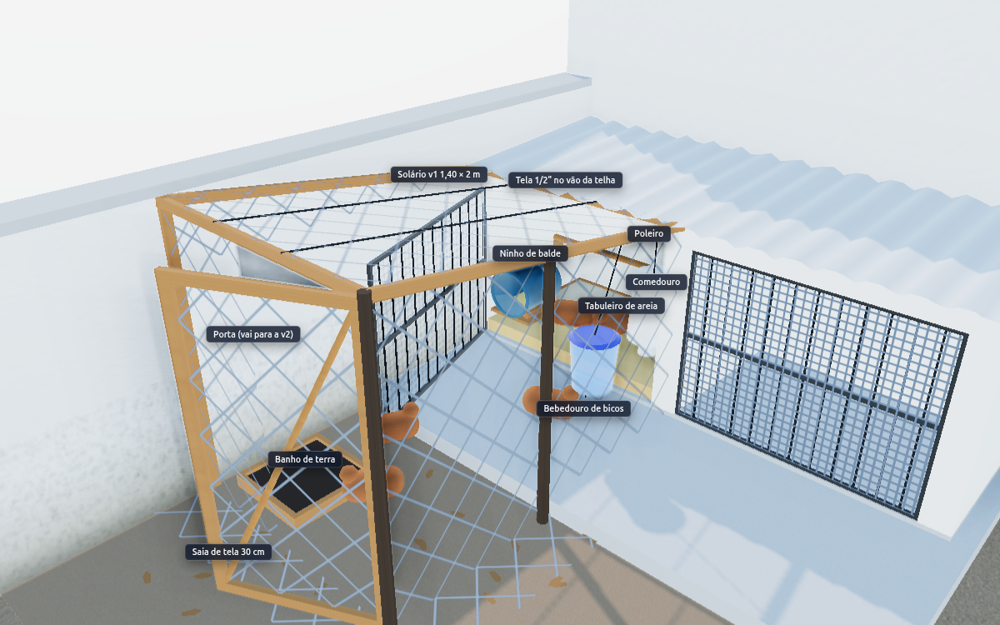
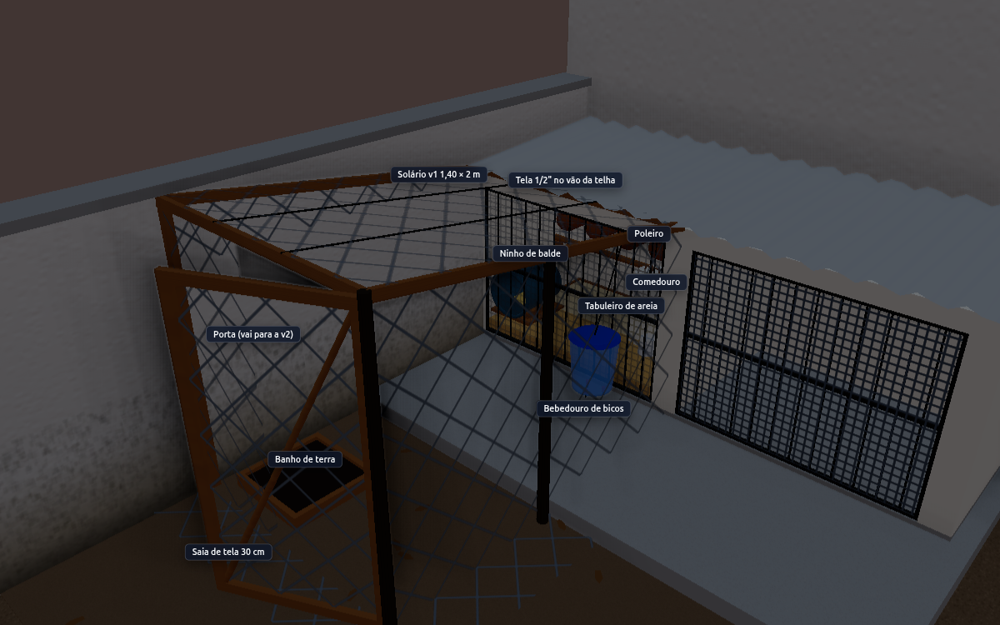
Seção 7 · Rotina Manutenção diária, semanal e mensal da v1
| Quando | O quê | Tempo |
|---|---|---|
| Todo dia | Abrir a grade de manhã, fechar à noite, olhar o balde e, depois de ~18–20 semanas, pegar os ovos | 2 min |
| 2× por semana | Peneirar o tabuleiro e raspar o patamar (o cocô vai para a compostagem da horta) | 5 min |
| 1× por semana | Revirar a maravalha e as folhas e completar o balde de água | 10 min |
| A cada ~3 semanas | Encher o comedouro | 5 min |
| 1× por mês | Conferir pixilinga à noite (seção abaixo) | 5 min |
| A cada 2–3 meses | Trocar toda a cama, que vai para a horta | 20 min |
Estimativas, sem medição: 5 aves bebem por volta de 1–1,5 L/dia no calor, então 10 L duram ~1 semana. A ração é ~120 g/dia por adulta (vídeo E7paYev-HyA), e o galão de 20 L dura 2–3 semanas. As hortas continuam como no PROJETO-HORTAS.md.
Seção 4 · Pixilinga Prevenção e controle de ácaros e piolhos de galinha (vale para v1 e v2)
O ácaro vermelho passa o dia escondido em fresta de madeira, emenda de ninho e trinca de parede, e sobe nas aves à noite. Por isso:
- Sem esconderijo: caiar (cal hidratada com água) as paredes internas do Canil 1 e a viga velha antes de as aves entrarem (também tira o limo verde), e tirar a tralha e as tábuas velhas soltas de perto dos canis.
- Poleiro removível: ele fica solto, apoiado em 2 suportes parafusados na parede, sem parafuso no próprio poleiro — assim sai inteiro para escaldar e tomar sol.
- Ninho de balde: balde de 20 L deitado, de plástico, sem emenda, com uma borda na boca. Lava com mangueira. A v2 passa a usar 3 baldes no lugar das caixas de tábua.
- Banho de terra: canto do solário com areia e cinza de lenha. É o que elas fazem por conta própria contra parasita.
- Pardal fora: comedouro dentro do canil e tela no solário inteiro. Pássaro de fora traz ácaro.
- Ave nova: comprar de fornecedor que vacina; antes de entrar no bando, olhar embaixo das asas e em volta da cloaca; manter 2–3 semanas separada.
- Conferência 1× por mês, à noite: passar papel branco ou lenço embaixo do poleiro e nas emendas. Pontinhos vermelhos ou cinza que se mexem são ácaro.
Seção 8 · Evolução Passagem da v1 para a v2 (construindo em volta, sem tirar as aves)
A v2 é construída em volta da v1, na ordem do guia-montagem.html. As aves ficam na v1 o tempo todo:
- Etapa 0 da v2 (mureta e baldrame na frente e na direita): fica fora da área da v1, não mexe nela.
- Etapas 1A e 1B (telhado novo): a telha velha sai (nesse dia as aves ficam presas no Canil 1); o sarrafo do vão 2 e as tiras de tela soldada do vão 1 são desmontados (as tiras voltam a ser usadas nos vãos de ventilação da v2, acima de
1,20 m); o teto de tela da v1 fica, porque passa por baixo do telhado novo. - Etapas 2A e 2B (estacas, tela e porta da v2): fecham o solário grande por fora.
- Só depois que o solário da v2 estiver fechado: desmontar a lateral direita, a frente e o teto da v1; arrancar as 2 estacas finas e socá-las nos lugares das 2 finas da v2; passar a porta para o lugar da porta da v2; tirar a saia.
- Etapa 3 (interior): o 2º poleiro entra no Canil 1, a
65 cmdo fundo; o Canil 2 ganha a tela1/2"e 3 ninhos de balde (o balde da v1 é um deles); o balde com bicos fica no patamar e substitui o bebedouro de 5 L, porque não derrama.
♻️ O que se reaproveita
- tela
1/2"da grade do Canil 1; - tiras de tela
1/2"dos vãos; - pedaços da tela hexagonal: o teto (
~2 m) e a lateral (~2 m) vão para o teto e as laterais da v2; - 2 estacas finas;
- 3 sarrafos;
- porta;
- arames;
- poleiro;
- tabuleiro;
- ninho de balde;
- comedouro;
- balde com bicos.
🗑️ O que se perde
- a saia de tela (faixa de
30 cm; a mureta da v2 faz esse papel); - furos de bucha no patamar e na parede, que se tapam com massa.
Seção 9 · Riscos Pontos de atenção e medidas ainda não conferidas
- Enchente: a terra do solário e o patamar alagam primeiro; o piso do canil fica a
~12–13 cmda terra. Em chuva forte: deixar as aves no canil, subir o comedouro e, depois, trocar a cama molhada. Ainda falta saber com que frequência alaga. - Teto e porta da v1 ainda não conferidos no local: falta conferir na Etapa 0 a altura real do beiral da telha velha (M1) e se o muro esquerdo tem mesmo
~1,25 m(M3). As duas medidas mudam o tamanho das tiras de tela.